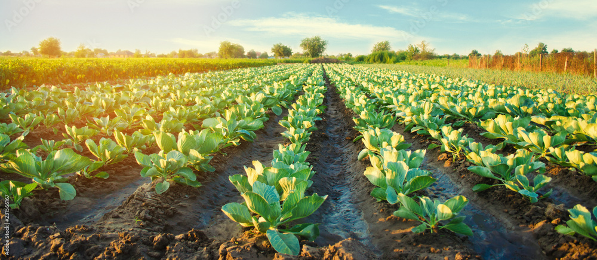
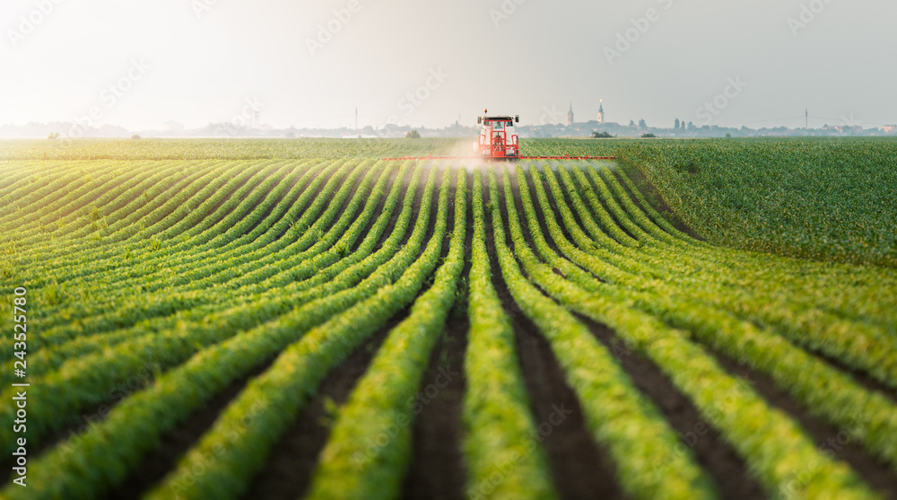

Sustainable Agriculture and Land Management
Preserving the Environment Through Sustainable Farming Practices
1. The Role of Sustainable Farming
Sustainable agriculture focuses on producing food while preserving natural resources. It ensures:
- Healthy soil: Retains nutrients and supports long-term crop growth.
- Efficient water use: Prevents wastage and reduces contamination.
- Reduced chemical usage: Minimizes pollution and promotes biodiversity.

Sustainable farming ensures long-term agricultural productivity.
2. Challenges in Sustainable Agriculture
Despite its benefits, sustainable farming faces several obstacles:
- Chemical overuse: Excess pesticides harm soil and biodiversity.
- Water scarcity: Poor irrigation systems lead to wastage and droughts.
- Soil degradation: Intensive farming strips soil of essential nutrients.
- Rising food demand: Leads to deforestation for expanding farmland.
3. Eco-Friendly Farming Practices
Adopting eco-friendly farming techniques helps maintain environmental balance:
- Crop rotation: Growing different crops each season to improve soil fertility.
- Organic farming: Using natural fertilizers and pesticides.
- Agroforestry: Integrating trees and plants into farming systems.
- Renewable energy: Using solar and wind-powered farming tools.
4. Supporting Sustainable Agriculture
Everyone can contribute to promoting sustainable agriculture:
- Buy organic and locally sourced food to reduce transportation emissions.
- Reduce food waste by consuming responsibly and composting leftovers.
- Advocate for policies that support sustainable farming and conservation.
- Educate farmers and communities about eco-friendly agricultural techniques.

Supporting sustainable agriculture helps build a healthier planet.
By choosing sustainable practices, we can protect the environment and ensure food security for future generations.